Connected block artwork
Each object has one continuous outer frame, with distinct left/right edges, top/bottom edges, corner joints and interior material. Individual tiles no longer carry a repeated full outline. Artwork uses native world pixels.
Breakable wall
Cracked masonry with a continuous stone frame.
8 × 8 px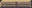
32 × 8 px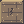
24 × 24 px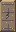
16 × 32 px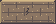
56 × 24 px29 × 13 px Crumble platform
Brittle layered stone; cracks deepen while it shakes.
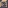
8 × 8 px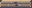
32 × 8 px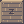
24 × 24 px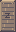
16 × 32 px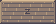
56 × 24 px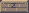
29 × 13 pxFalling block
Steel-blue weight with riveted corners and a down marker.
8 × 8 px32 × 8 px24 × 24 px16 × 32 px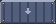
56 × 24 px29 × 13 px Moving block
Brass frame and central motor; the game retains its rail and status light.
8 × 8 px32 × 8 px24 × 24 px16 × 32 px56 × 24 px29 × 13 px
One-way platform
A thin continuous rail with two end caps.
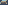
8 × 5 px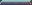
32 × 5 px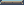
24 × 5 px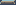
16 × 5 px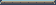
56 × 5 px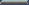
29 × 5 pxBreakable wall damage
The cracks form across the complete wall instead of restarting in every tile.
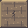
Intact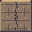
Damaged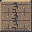
Nearly brokenDream blocks retain their original dark fill, white outline and animated stars. These are exports of the same artwork used by the game and editor. Animated stars, shaking, damage flashes and the moving-block light are applied by Godot.